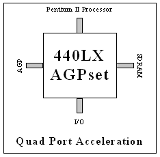

|
Intel Pentium II Processor
Standard on the Bravo MS is the Intel Pentium II processor. The Intel Pentium II processor is for those who
have little patience for delays. No matter what you do on your business desktop, it can be done faster with the
Pentium II. The Pentium II processor builds upon its Pentium Pro predecessor by incorporating 7.5 million transistors,
32KB of primary cache, 512KB of secondary cache, and Intel's MMX technology to bring to you the best performance
available for 16-bit and 32-bit applications running on advanced operating systems such as Microsoft's®
Windows® '95 and Window NT®. Software developers can use the
Pentium II with MMX to improve full-motion video, enhance colors, and achievesmooth graphics. If you need the freedom
to excel, the Intel® Pentium II is for you.
Intel 440LX AGPset
With the Pentium II processor-based Bravo MS the business user get full access to Intel's most feature rich
core logic chipset, the Intel 440LX AGPset. The 440LX brings a leap forward in functionality to the Bravo MS, complementing
the power of its Pentium II processor. Key technologies and features enabled by the 440LX include Accelerated Graphics Port (AGP) technology, Quad Port Acceleration, UltraDMA-33, SDRAM, and ACPI (Advanced Configuration
and Power Interface). The impact of these features on the performance of the Bravo MS are highlighted below.
440LX and Quad Port Acceleration
With the 440LX comes three unique architectural optimizations called Quad Port Acceleration (QPA) that increase
overall system concurrency (bandwidth and performance), elevating the computing experience. QPA includes Direct
Connect AGP, Dynamic Distributed Arbitration and Multistream Memory Access.
Accelerated Graphics Port (AGP)
Perhaps the most exciting technology brought forth by the Bravo MS 6000 series is AGP. The Accelerated Graphics
Port (AGP) brings faster and better graphics to the Bravo MS. The best performance will be seen in AGP optimized
applications, but non-AGP optimized applications will also benefit. AGP uses a connector similar to the PCI bus, with 32-bits of multiplexed address and data. While the PCI bus, clocked at 33 MHz,
supports a maximum 132 MB/s transfer rate, an AGP point-to-point connection operating at 66 MHz yields a surprising
528 MB/s peak transfer rate. Although throughput may vary depending on application, it will usually obtain about
50~80% of peak rate in real world sustainable transfers. Note that AGP cards that support 133MHz transfer rates
are also supported on the Bravo MS.
A unique feature of AGP is that it can dynamically access unused main system memory -- in addition to using
its own dedicated memory. Fully-implemented AGP Graphics chips can exploit main memory directly (know as DIME for
DIrect Memory Execute) for the complex operation of texture-mapping. Other key benefits of AGP are increased graphics
bandwidth (at least 4x), increased overall system bandwith (due to graphics I/O being removed from the PCI bus),
and the equivalent of an extra expansion slot.
Integrated PCI 2D/3D Graphics -- ATI Rage II+
For those satisfied with standard PCI graphics, the Bravo MS's integrated ATI Rage II+ delivers superior 3D
features and performance including perspective correct texturing, Gouraud shading and a host of other special 3D
effects. Additionally, superior 2D acceleration is achieved through an advanced architecture that is optimized
for SGRAM. On the Bravo MS graphics memory can be expanded to 6MB of SGRAM.
AST NLX FlexChassis
With the push of a button the AST's FlexChassis
allows easy access to the inside of your computer. This tool-less entry chassis surrounds the AST NLX system board
which slides out of the chassis with a flip of a lever. The design of the chassis allows for full-length PCI, ISA, and AGP cards and easy access to any space on the system board,
especially important when upgrading system or graphics memory. This tool-less chassis will dramatically reduce
the time spent upgrading and servicing your computer, making system maintenance an ease and lower the total cost
of ownership.
System Noise Reduction
As systems have become more powerful and faster, system noise has become more of an issue. AST's System Noise Reduction (SNR) technology addresses a variety of noise issues with a variety of
solutions. Quieter, variable-speed fans are used to cool systems. Sound dampening materials are used to encase
hard disk drives, reducing especially irritating high-pitched noises. And the location of fans and vents are designed
to produce the best combination of noise reduction and cooling.
SDRAM DIMMs
Another feature enabled by the 440LX is SDRAM. SDRAM DIMMS offer the fastest and most efficient system memory
performance on the market. The Bravo MS uses 120MHz SDRAM with a cycle time of 12 nanoseconds -- typical EDO RAM
has a cycle time of 60 nanoseconds. SDRAM is the first DRAM technology designed to synchronize itself with the
processor. SDRAM (either ECC or non-ECC) is just another feature aimed at increasing the performance of the Bravo
MS.
UltraDMA33 with S.M.A.R.T. and CRC
Yet another major feature enabled by the 440LX is UltraDMA-33 technology, the latest in hard disk drive technology
and standard on all Bravo MS systems. The burst transfer rate of an Ultra DMA33 hard disk drive is 33 MB/s which
is more than double that of its predecessor, the PIO Mode 4 IDE hard disk drive. An additional feature on Bravo
MS hard disk drives is S.M.A.R.T. (System Monitoring Analysis and Reporting Technology) technology, an algorithm
that will send a signal if your hard disk drive exhibits signs of impending failure. Also included is a feature
call CRC (Cyclical Redundancy Checking) which helps to maintain data integrity.
Integrated Intel 10/100 Ethernet
Need to get connected to a network? Look no further. Integrated into the Bravo MS system board is Intel's PCI
based 10/100 MB Ethernet which utilizes a 32-bit bus master architecture to provide the right balance of high throughput
and low CPU utilization for optimal efficiency. The integrate Intel 10/100 Ethernet will automatically switch between
10MB Ethernet and 100MB Fast Ethernet depending on your network. Furthermore, the Wake-on-LAN feature required
by PC98 is supported.
Integrated 16-Bit Audio
For those presentations with sound, for sound clips off the internets, or for reviewing multimedia presentations
from a CD-ROM, the Bravo MS provides its user with integrated rich Sound Blaster compatible 16-bit audio with 3D
effect and a high quality FM synthesizer. Through the use of multi-channel virtualization, a 6-speaker (Dolby AC-3)
can be recreated using just two computer speakers, bringing a new world of sound effects into any business presentation.
The 3D solution produces an incredible surround sound effect without compromising the quality of the audio stream.
As video conferencing technology and audio over the internet become mainstream, audio streaming integrity will
become very important. Your Bravo has the technology for the future.
|